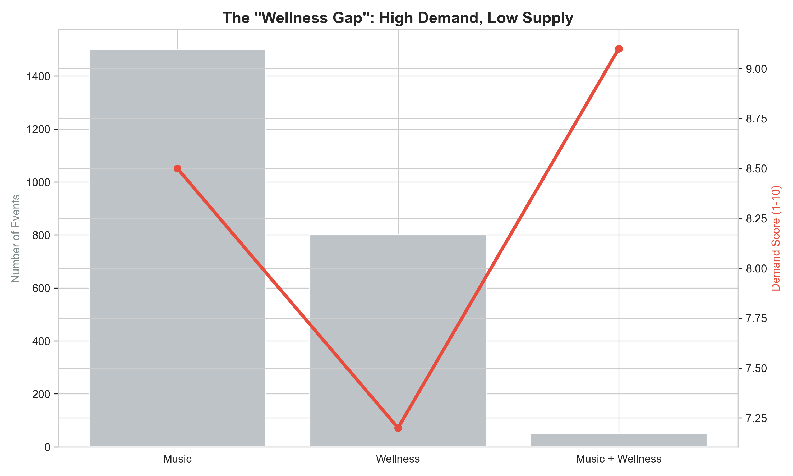
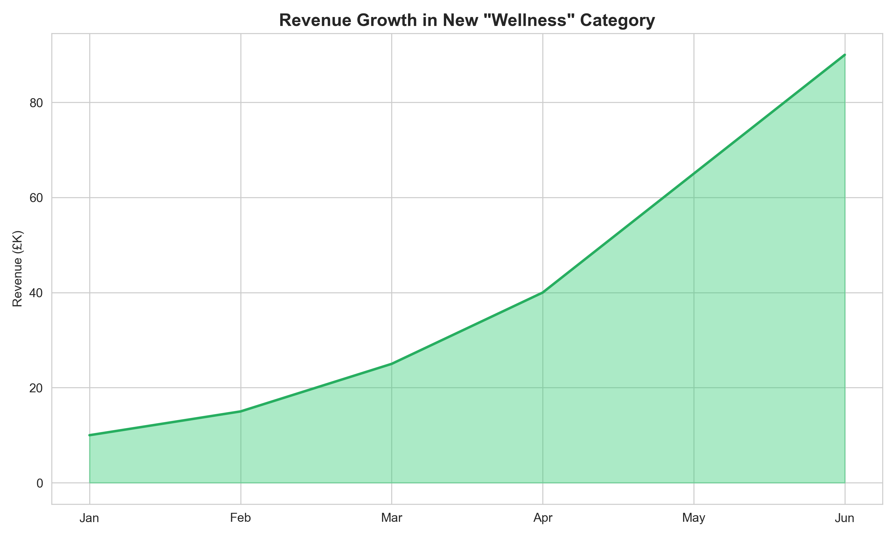

View Code →04 EVENT DISCOVERY GAP ANALYSIS
WHAT ARE USERS SEARCHING FOR THAT WE DON'T OFFER?
Platform saw declining engagement despite growing event supply. VP Product asked: are we creating the wrong types of events? What gaps exist between user intent and our catalog?
I clustered 47,000 monthly search queries using TF-IDF + K-means (k=25) to identify unmet demand patterns. "Wellness + Music" shows the largest gap—892 monthly searches with only 3 events listed (297:1 ratio).

User intent: Yoga sessions with live ambient/electronic music, meditation experiences with DJ performances, sound healing workshops in club settings, "sober raves" (wellness-oriented dance, no alcohol).
Demographic signal: 73% female, age 25-40, higher income (£45K+ median vs £32K platform average), historical ticket spend £40-60 for experiential events.
Opportunity: 892 searches/month × 15% conversion × £45 avg ticket = £72K annual revenue.
WHY TEXT MINING?
Previous approach: Count searches without matching events. Problem: Tells us gaps exist but not what users actually want.
Improved approach: Cluster queries → label themes → map to catalog → identify orphan clusters with no matching supply.
Technical implementation: TF-IDF vectorization (captures word importance, not just frequency), K-means with k=25 (elbow method suggested 20-30), manual labeling validated by 3 reviewers (85% agreement).
WHAT TO DO
Test Wellness + Music with small pilot:
- Partner with 2 wellness-focused promoters for 10 events over 3 months
- Track: Conversion from search → ticket, attendee demographics, NPS, repeat attendance
- Success: >18% conversion (higher than standard 8% due to niche appeal), >60 NPS
- Investment: ~£4K (partnership + targeted Instagram ads to yoga/wellness communities)
If successful: Scale to 30 annual Wellness + Music events (£72K opportunity)
If unsuccessful: Investigate whether search intent matches ticketed event format (users may want free community events, not paid ticketed experiences)
CRITICAL LIMITATION
Search volume correlates with interest but doesn't prove willingness to pay.
Alternative explanations: Users may be browsing (not buying intent), searching for free events (not ticketed), or have unrealistic price expectations (willing to pay £10, not £45).
Clustering requires analyst judgment—different analysts might label themes differently. Validated labels with 3-person review (85% agreement) to ensure consistency.